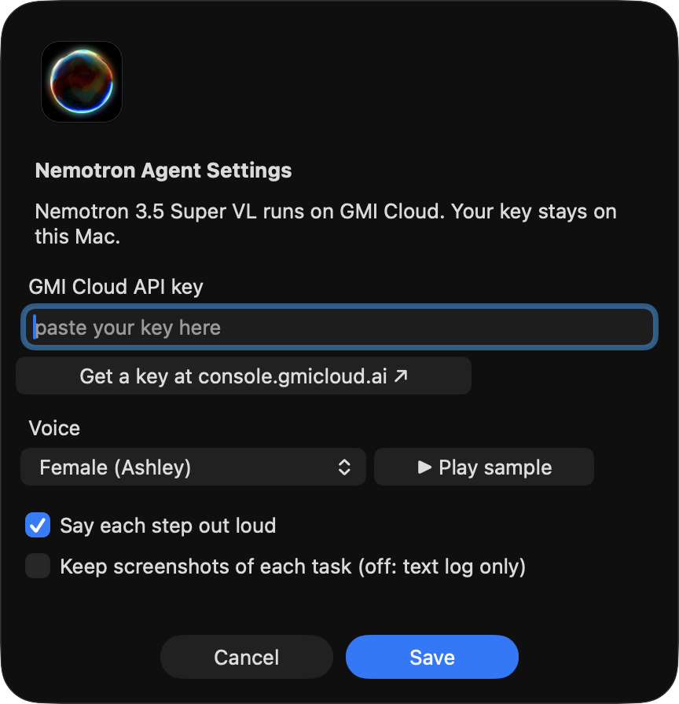
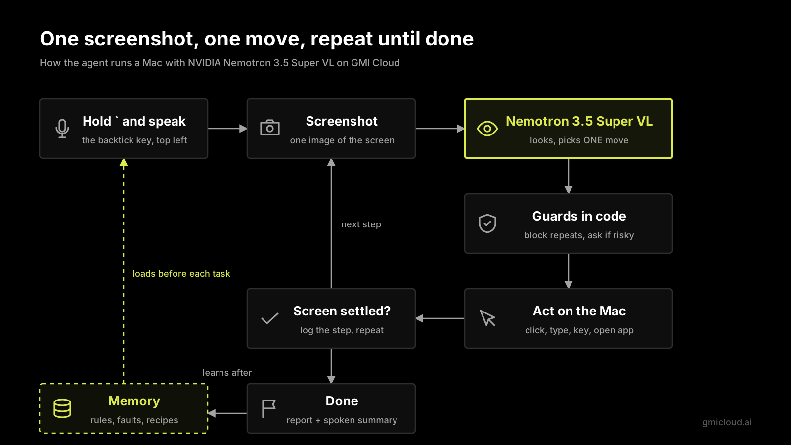

Nemotron Agent is a free voice computer-use agent for Mac. Hold `, say a task, let go. It sees your screen and uses the mouse and keyboard until the task is done.
An AI agent that works in any Mac app, not only in a browser.
Push to talk with `. Whisper turns speech into text on your Mac.
It clicks, types, uses shortcuts, scrolls and opens apps.
A female or male voice says each step. Pick one in Settings.
Esc stops it at once. It asks before it sends, deletes, buys or posts.
A local memory keeps rules and short recipes, so the next run is faster.
No screenshots are kept by default. Your key stays on your Mac.
About 10 minutes. You need a Mac with Apple Silicon, Python 3.11+, and a GMI Cloud API key.
This makes a Python environment, gets the speech model and adds the app to Applications.
git clone https://github.com/roangws/nemotron-3.5-super-computer-use-app.git cd nemotron-3.5-super-computer-use-app ./install.sh
Sign in at console.gmicloud.ai/user-console/ie, make a key and copy it.
Open Nemotron Agent from Applications. The orb shows in the menu bar and Settings opens. Paste the key and click Save.
System Settings → Privacy & Security: turn on Nemotron Agent in Screen Recording, Accessibility, Input Monitoring and Microphone. Then open the app again.
Hold `, say “Open Calculator and compute 19 times 37”, and let go. Press esc to stop at any time.
Menu bar orb → Settings…
| Setting | What it does |
|---|---|
| GMI Cloud API key | Your key. Saved only on your Mac. |
| Voice | Female (Ashley) or Male (Dennis). Play a sample first. |
| Say each step | Nemo says what it does, like “Opening Safari”. |
| Keep screenshots | Off by default. Off: a text log only. |

One screenshot, one move, repeat until done. About 3.4 seconds per step. 10 of 10 tasks passed in our test suite with real checks.

The code is free and open source (MIT). The model and voice run on GMI Cloud and use your GMI account.
Apple Silicon (M1 or newer) with macOS 13 or newer. Intel Macs, Windows and Linux are not supported now.
It is a small open-source agent you run on your own Mac, with an open-weight model (NVIDIA Nemotron 3.5 Super VL). It works in any app, not only in a browser.
Each screenshot goes to GMI Cloud to pick the next action, and short spoken lines go to the voice service. Your voice is turned into text on your Mac.
Turn on Accessibility and Input Monitoring for Nemotron Agent, then quit and open the app again.